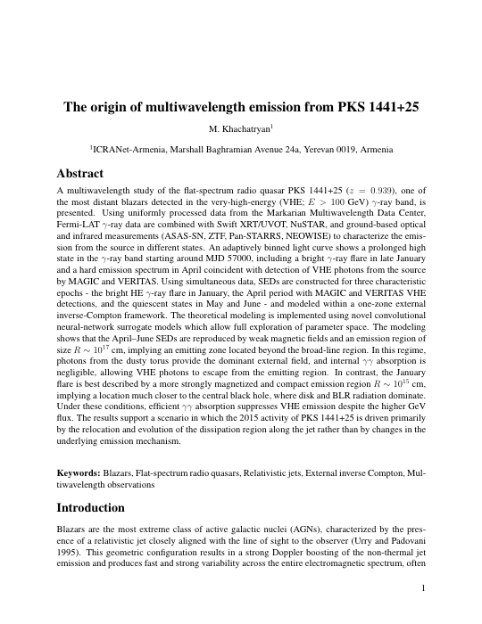

The origin of multiwavelength emission from PKS 1441+25
M. Khachatryan
ICRANet-Armenia, Marshall Baghramian Avenue 24a, Yerevan 0019, Armenia
This is an independent, unofficial hosting page for the article PDF.
| Journal | Astrophysics |
|---|---|
| DOI | 10.1007/s10511-026-09892-7 (pending activation) |
| Format | PDF, 18 pages |
| Title | The origin of multiwavelength emission from PKS 1441+25 |
A multiwavelength study of the flat-spectrum radio quasar PKS 1441+25 (z = 0.939), one of the most distant blazars detected in the very-high-energy gamma-ray band.